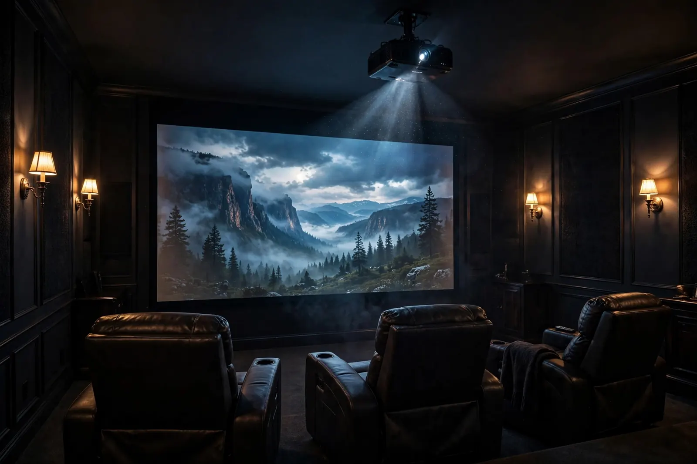
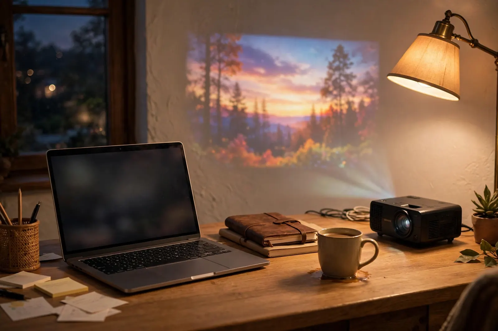
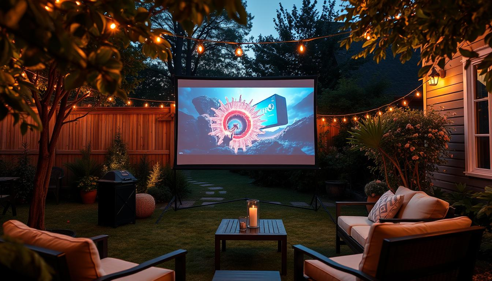
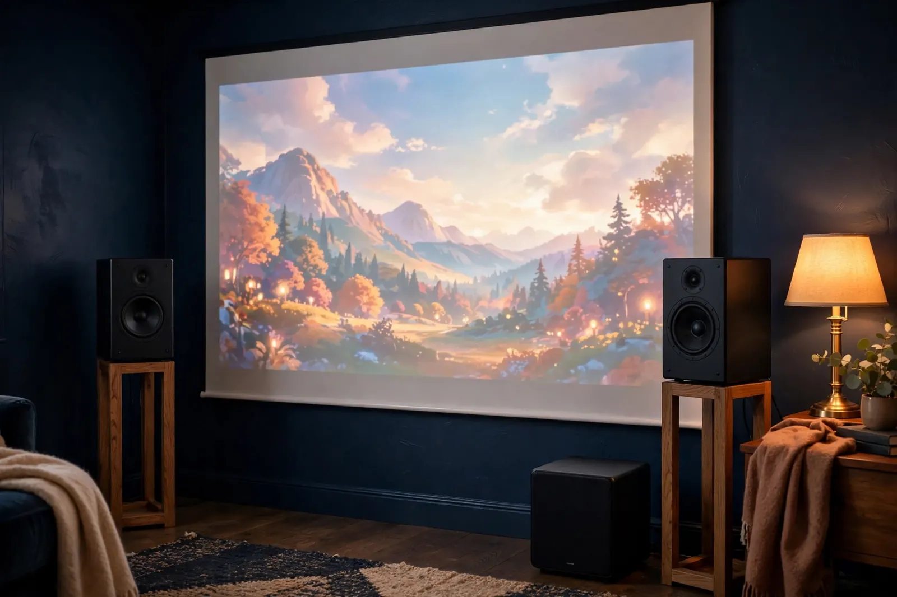
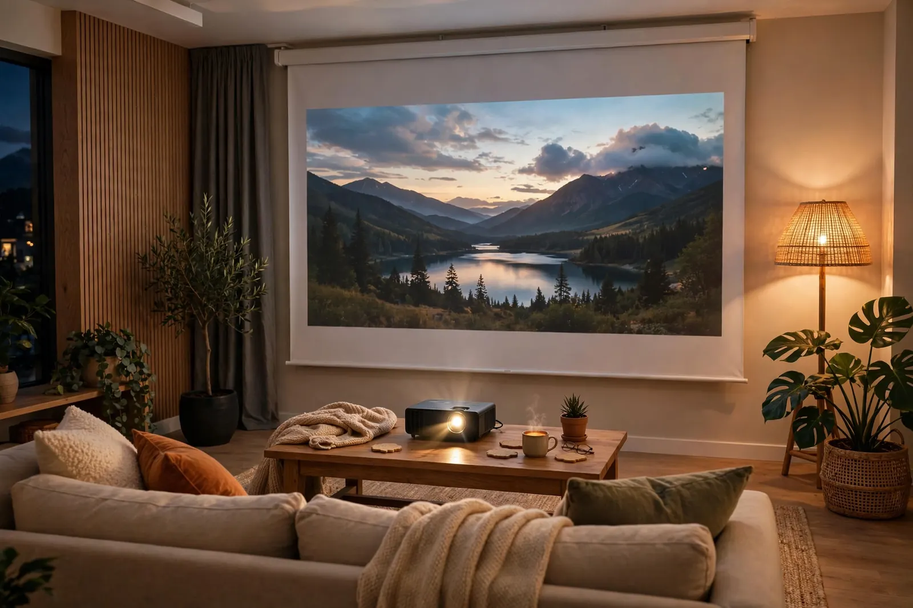

Guide
BenQ Projectors
How to choose among BenQ's home entertainment, gaming, and business lines, what the model numbers mean, and which models I actually recommend.
Read the Guide
Buying Guides
Projector specs are written to confuse you. These guides cut through the marketing and explain what actually matters, in plain language, with no sponsored picks.
Every projector decision comes down to the same handful of specs and one room. Learn these once and you can read any product page without getting played.
| ANSI lumens | The honest brightness number. Ignore big "LED lumens" or "light source lumens" claims on the box and compare ANSI lumens only. A dark room needs far fewer than a living room with windows. |
|---|---|
| Resolution | 1080p is the budget sweet spot. True 4K costs more but looks sharper on big screens. "Supports 4K" on a 1080p projector just means it accepts a 4K signal; it still displays 1080p. |
| Contrast ratio | How deep the blacks get. This is what makes a movie look cinematic, and it is the first thing cheap projectors skimp on. In a dark room, contrast matters more than brightness. |
| Throw ratio | How far back the projector sits for a given screen size. A long-throw projector needs a deep room; a short-throw can sit close to the screen. Measure your room first, then run the numbers in our calculator. |
| Input lag | The delay between your controller and the screen. Under about 30ms is fine for gaming; for movies it does not matter at all. |
| Light source | Lamp: bright and cheap to replace every few thousand hours. LED: long life, compact, dimmer. Laser: long life, very bright, costs more up front. |
| Lens shift / keystone | Lens shift moves the image without distorting it, which is what you want for a ceiling mount. Digital keystone fixes angles too, but it crops pixels and softens the image, so treat it as a backup. |
Want the full vocabulary? The projector glossary covers every term on a spec sheet in plain language.

Guide
How to choose among BenQ's home entertainment, gaming, and business lines, what the model numbers mean, and which models I actually recommend.
Read the Guide
Guide
Smart, portable, lifestyle projectors explained: brightness realities, built-in audio, and when a compact projector makes sense.
Read the Guide
Guide
White vs. gray vs. ALR, gain explained, fixed-frame vs. pull-down, and when a plain wall is actually fine.
Read the Guide
Guide
Projector speakers are an afterthought. Here is how to add a soundbar, powered speakers, or a full surround setup.
Read the Guide
Guide
Lamp hours, remotes, seller checks, best-offer strategy, and the red flags that mean walk away.
Read the GuideStill Unsure?
Tell us about your room, budget, and what you'll watch. We will recommend the right projector. Consultations start at $25.
Book a Consultation